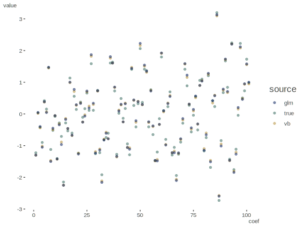
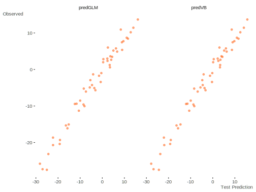
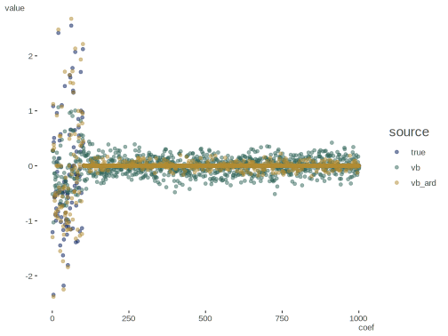

Variational Bayes Regression
The following provides a function for estimating the parameters of a linear regression via variational inference. See Drugowitsch (2014) for an overview of the method outlined in Bishop (2006).
For the primary function I will use the notation used in the Drugowitsch article in most cases. Here w, represents the coefficients, and τ the precision (inverse variance). The likelihood for response y is N(Xw, τ-1). Priors for w and tau are normal inverse gamma N(0, (τα)-1) Gamma(a0, b0).
References: - Drugowitsch: http://arxiv.org/abs/1310.5438 - See here and here for his Matlab implementations. - Bishop: Pattern Recognition and Machine Learning
Data Setup
We can simulate some data as a starting point, in this case, basic tabular data used in the standard regression problem. Note that here, I explicitly note the intercept, as it is added to the model matrix within the vb_reg function.
library(tidyverse)
set.seed(1234)
n = 100
d = 3
coefs = c(1, 2, 3, 5)
sigma = 2
X = replicate(d, rnorm(n)) # predictors
colnames(X) = paste0('X', 1:d)
y = cbind(1, X) %*% coefs + rnorm(n, sd = sigma) # target
df = data.frame(X, y)We can also look at the higher dimension case as done in Drugowitsch section 2.6.2.
n = 150
ntest = 50
d = 100
coefs = rnorm(d + 1)
sigma = 1
X_train = cbind(1, replicate(d, rnorm(n)))
y_train = X_train %*% coefs + rnorm(n, sd = sigma)
X_test = cbind(1, replicate(d, rnorm(ntest)))
y_test = X_test %*% coefs + rnorm(ntest, sd = sigma)Function
First, the main function. Here automatic relevance determination is an argument rather than a separate function.
vb_reg = function(
X,
y,
a0 = 10e-2,
b0 = 10e-4,
c0 = 10e-2,
d0 = 10e-4,
tol = 1e-8,
maxiter = 1000,
ard = F
) {
# X: model matrix
# y: the response
# a0, b0 prior parameters for tau
# c0, d0 hyperprior parameters for alpha
# tol: tolerance value to end iterations
# maxiter: alternative way to end iterations
# initializations
X = cbind(1, X)
D = ncol(X)
N = nrow(X)
w = rep(0, D)
XX = crossprod(X)
Xy = crossprod(X,y)
a_N = a0 + N/2
if (!ard) {
c_N = c0 + D/2
E_alpha = c0/d0
} else {
c_N = c0 + 1/2
E_alpha = rep(c0/d0, D)
}
tolCurrent = 1
iter = 0
LQ = 0
while(iter < maxiter && tolCurrent > tol ){
iter = iter + 1
# wold = w
if(!ard){
b_N = b0 + 1/2 * (crossprod(y - X%*%w) + E_alpha * crossprod(w))
VInv = diag(E_alpha, D) + XX
V = solve(VInv)
w = V %*% Xy
E_wtau = a_N/b_N * crossprod(w) + sum(diag(V))
d_N = d0 + 1/2*E_wtau
E_alpha = c(c_N/d_N)
} else {
b_N = b0 + 1/2 * (crossprod(y - X%*%w) + t(w) %*% diag(E_alpha) %*% w)
VInv = diag(E_alpha) + XX
V = solve(VInv)
w = V %*% Xy
E_wtau = a_N/b_N*crossprod(w) + sum(diag(V))
d_N = d0 + 1/2*(c(w)^2 * c(a_N/b_N) + diag(V))
E_alpha = c(c_N/d_N)
}
LQ_old = LQ
suppressWarnings({
LQ = -N/2*log(2*pi) - 1/2 * (a_N/b_N * crossprod(y- crossprod(t(X), w)) + sum(XX * V)) +
1/2 * determinant(V, log = TRUE)$modulus + D/2 - lgamma(a0) + a0 * log(b0) - b0 * a_N / b_N +
lgamma(a_N) - a_N * log(b_N) + a_N - lgamma(c0) + c0*log(d0) +
lgamma(c_N) - sum(c_N*log(d_N))
})
tolCurrent = abs(LQ - LQ_old)
# alternate tolerance, comment out LQ_old up to this line if using
# tolCurrent = sum(abs(w - wold))
}
res = list(
coef = w,
sigma = sqrt(1 / (E_wtau / crossprod(w))),
LQ = LQ,
iterations = iter,
tol = tolCurrent
)
if (iter >= maxiter) {
res = append(res, warning('Maximum iterations reached.'))
} else {res}
}Estimation
First we can estimate the model using the smaller data.
fit_small = vb_reg(X, y, tol = 1e-8, ard = FALSE)
glimpse(fit_small)List of 5
$ coef : num [1:4, 1] 1.01 2.29 3.29 5.02
..- attr(*, "dimnames")=List of 2
.. ..$ : chr [1:4] "" "X1" "X2" "X3"
.. ..$ : NULL
$ sigma : num [1, 1] 2.08
$ LQ : num [1, 1] -233
..- attr(*, "logarithm")= logi TRUE
$ iterations: num 8
$ tol : num [1, 1] 1.11e-10
..- attr(*, "logarithm")= logi TRUE# With automatic relevance determination
fit_small_ard = vb_reg(X, y, tol = 1e-8, ard = TRUE)
glimpse(fit_small_ard)List of 5
$ coef : num [1:4, 1] 0.955 2.269 3.283 5.047
..- attr(*, "dimnames")=List of 2
.. ..$ : chr [1:4] "" "X1" "X2" "X3"
.. ..$ : NULL
$ sigma : num [1, 1] 2.09
$ LQ : num [1, 1] -229
..- attr(*, "logarithm")= logi TRUE
$ iterations: num 9
$ tol : num [1, 1] 7.46e-09
..- attr(*, "logarithm")= logi TRUElm_mod = lm(y ~ ., data = df)Now with the higher dimensional data. We fit using the training data and will estimate the error on training and test using the yardstick package.
fit_vb = vb_reg(X_train[,-1], y_train)
fit_glm = glm.fit(X_train, y_train)
# predictions
vb_pred_train = X_train %*% fit_vb[['coef']]
vb_pred_test = X_test %*% fit_vb[['coef']]
glm_pred_train = fitted(fit_glm)
glm_pred_test = X_test %*% coef(fit_glm)
# error
vb_train_error = yardstick::rmse_vec(y_train[,1], vb_pred_train[,1])
vb_test_error = yardstick::rmse_vec(y_test[,1], vb_pred_test[,1])
glm_train_error = yardstick::rmse_vec(y_train[,1], glm_pred_train)
glm_test_error = yardstick::rmse_vec(y_test[,1], glm_pred_test[,1])Comparison
For the smaller data, we will compare the coefficients.
| no_ard | ard | lm |
|---|---|---|
| 1.010 | 0.955 | 1.012 |
| 2.291 | 2.269 | 2.300 |
| 3.286 | 3.283 | 3.297 |
| 5.024 | 5.047 | 5.045 |
For the higher dimensional data, we will compare root mean square error.
| vb | glm | |
|---|---|---|
| train | 0.574 | 0.566 |
| test | 1.876 | 1.982 |
Visualization
In general the results are as expected where the standard approach overfits relative to VB regression. The following visualizes them, similar to Drugowitsch figure 1.

Supplemental Example
And now for a notably higher dimension case with irrelevant predictors as in Drugowitsch section 2.6.3. This is problematic for the GLM with having more covariates than data points (rank deficient), and as such it will throw a warning, as will the predict function. It’s really not even worth looking at but I have the code for consistency.
This will take a while for the standard vb_reg, and even bumping up the iterations to 2000, it will still likely hit the max before reaching the default tolerance level. However, the results appear very similar to that of Drugowitsch Figure 2.
set.seed(1234)
n = 500
ntest = 50
d = 1000
deff = 100
coefs = rnorm(deff + 1)
sigma = 1
X_train = cbind(1, replicate(d, rnorm(n)))
y_train = X_train %*% c(coefs, rep(0, d - deff)) + rnorm(n, sd = sigma)
X_test = cbind(1, replicate(d, rnorm(ntest)))
y_test = X_test %*% c(coefs, rep(0, d - deff)) + rnorm(ntest, sd = sigma)fit_vb = vb_reg(X_train[,-1], y_train)
fit_vb_ard = vb_reg(X_train[,-1], y_train, ard = TRUE)
# fit_glm = glm(y_train ~ ., data = data.frame(X_train[,-1]))# predictions
vb_pred_train = X_train %*% fit_vb[['coef']]
vb_pred_test = X_test %*% fit_vb[['coef']]
#
vb_ard_pred_train = X_train %*% fit_vb_ard[['coef']]
vb_ard_pred_test = X_test %*% fit_vb_ard[['coef']]
# glm_pred_train = fitted(fit_glm)
# glm_pred_test = X_test %*% coef(fit_glm)
# error
vb_train_error = yardstick::rmse_vec(y_train[,1], vb_pred_train[,1])
vb_test_error = yardstick::rmse_vec(y_test[,1], vb_pred_test[,1])
# error
vb_ard_train_error = yardstick::rmse_vec(y_train[,1], vb_ard_pred_train[,1])
vb_ard_test_error = yardstick::rmse_vec(y_test[,1], vb_ard_pred_test[,1])
# glm_train_error = yardstick::rmse_vec(y_train[,1], glm_pred_train)
# glm_test_error = yardstick::rmse_vec(y_test[,1], glm_pred_test[,1])mseResults = data.frame(
vb = c(vb_train_error, vb_test_error),
vbARD = c(vb_ard_train_error, vb_ard_test_error)#,
# glm = c(glm_train_error, glm_test_error)
)
rownames(mseResults) = c('train', 'test')
kable_df(mseResults)| vb | vbARD | |
|---|---|---|
| train | 0.641 | 0.002 |
| test | 8.378 | 2.323 |
Note how ARD correctly estimates (nearly) zero for irrelevant predictors.
| N | Mean | SD | Min | Q1 | Median | Q3 | Max | % Missing |
|---|---|---|---|---|---|---|---|---|
| 900 | 0 | 0 | -0.2 | 0 | 0 | 0 | 0.4 | 0 |
Visualized, as before.

Source
Original code available at: https://github.com/m-clark/Miscellaneous-R-Code/tree/master/ModelFitting/Bayesian/multinomial